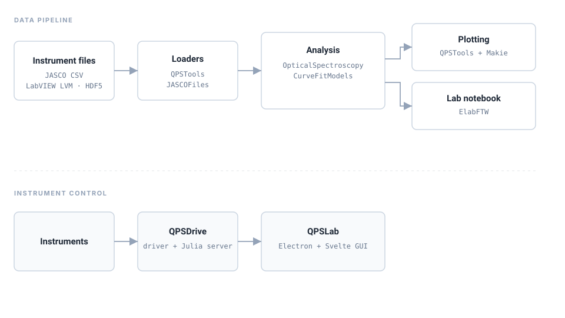

CurveFitModels.jl
Model functions — lorentzian, gaussian, pseudo_voigt, dielectric, sinusoids — designed to work with CurveFit.jl. Zero dependencies.
Open-source packages for modeling, file parsing, analysis, and eLabFTW integration — plus QPSTools, the Quantum Photo-Science Lab's private layer that composes them around our instruments and workflow.
Instrument files flow through loaders into analysis, then into publication-ready figures and an eLabFTW entry. A parallel control stack drives the instruments themselves.

Public libraries paired with QPSTools, the lab's private integration layer. Install whichever layers you need.
Model functions — lorentzian, gaussian, pseudo_voigt, dielectric, sinusoids — designed to work with CurveFit.jl. Zero dependencies.
JASCO CSV parser for FTIR, Raman, and UV–Vis spectra, with header-metadata extraction.
Nonlinear fitting backend (NonlinearCurveFitProblem, solve) from the SciML ecosystem. Not part of QPS, but used throughout.
Ultrafast-first analysis: transient-absorption trace / spectrum / matrix types, exponential decay fitting with IRF convolution, and cosmic-ray removal. Plus peak fitting, baselines, PL maps, and unit conversions.
Polariton analysis — extraction from QPSTools in progress. Repository currently an empty shell.
The lab's integration layer: LabVIEW LVM loaders, Makie plotting themes, cavity analysis, and eLabFTW provenance glue. Does not re-export siblings.
Julia client for the eLabFTW lab-notebook API — experiments, items, tags, uploads, and links. (The official eLabFTW client is Python.)
Instrument driver and Julia server — the lab's scan engine.
Julia driver for SOL Instruments MS-series monochromators.
Electron + Svelte GUI analysis app, backed by a Julia HTTP server over the same analysis libraries.
The Quantum Photo-Science Lab builds open-source Julia tooling for its spectroscopy workflow — linear FTIR, Raman, and UV–Vis, alongside photoluminescence mapping, transient absorption, and cavity polariton experiments. The ecosystem above is the result: reusable sibling packages for anyone doing similar work, plus a private integration layer (QPSTools) that wires in the lab's instruments, plotting conventions, and eLabFTW provenance.
Maintained by Garrek Stemo. Issues and contributions are welcome on any of the public repositories.